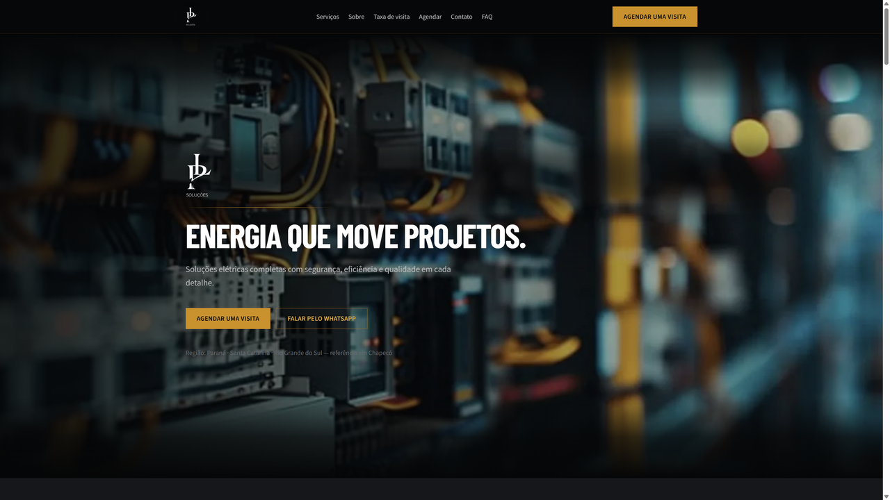

Web + agendamento Cliente real
LP Soluções: site com agendamento no Google Calendar
Empresa de serviços elétricos precisava agendar visitas técnicas sem troca manual de mensagens. O visitante escolhe o horário, o agendamento cai direto no Google Calendar, a equipe recebe aviso no WhatsApp e o cliente segue por e-mail, com contrato digital.